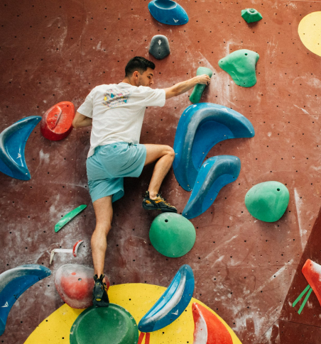

What is Bouldering?
Bouldering is a form of rock climbing that is performed on small rock formations or artificial rock walls without the use of ropes or harnesses.
Unlike traditional climbing, bouldering focuses on short but intensive routes called "problems," typically keeping climbers within a safe distance from the ground while they navigate challenging sequences of moves.
